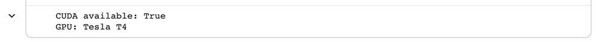
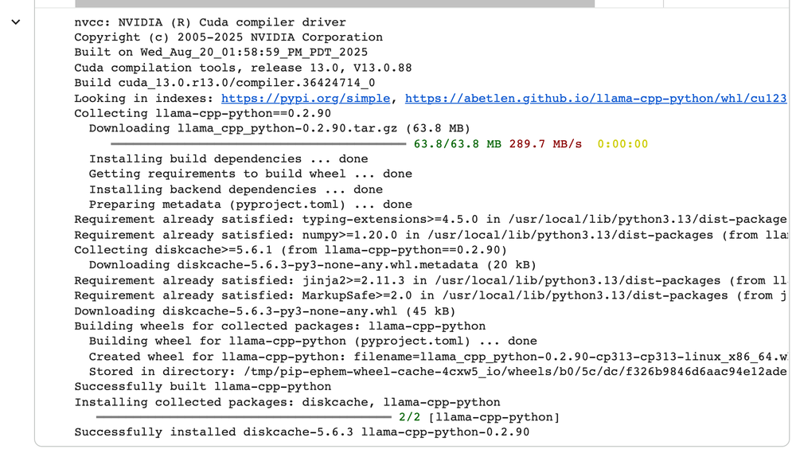
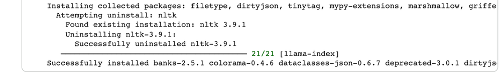
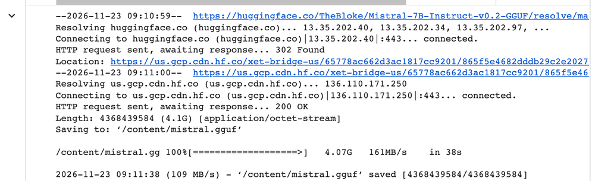
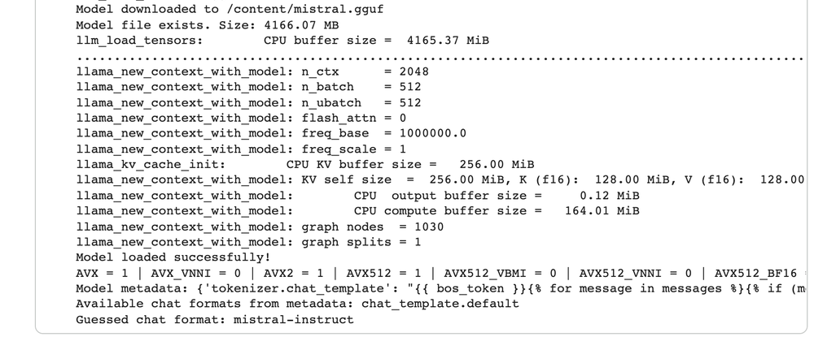
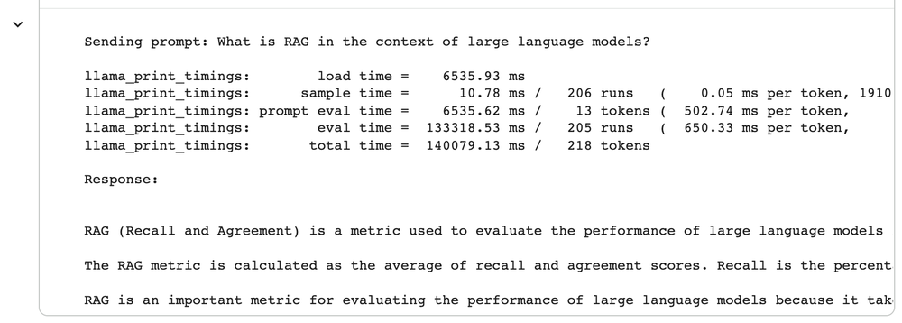

Here's the Colab notebook you'll work in. You can follow along with this code in the sample Colab file.
Some cells are slow. In our run, the six cells took about 7 minutes in all. Two of them took more than 2 minutes each, with no progress bar. That's normal: the slides tell you which ones.
Important: You must change the Runtime type in Colab to GPU before proceeding further. You would not be able to use the code below without doing that.
A GPU is a graphics chip that can do many small sums at once, which speeds up AI models. The CPU is the computer's normal processor. Colab gives you a free GPU called the T4.
This notebook already asks Colab for a T4, so it may be picked for you. Check anyway.
If Colab shows Failed to assign a backend (no GPU free right now), see If You're Stuck on the page under these slides.
Before we can run our model, we need to install some dependencies (other libraries that this code needs to work). Press Run on the first code cell:
# Install required libraries with CUDA support!pip install -q torchWhat this code does:
!pip install downloads a library (a set of ready-made code) into your Colab session.torch is PyTorch. -q means quiet: pip prints only warnings and errors.What you'll see in Colab:
Nothing. Colab already has torch, so the cell finishes in a few seconds (7 seconds in our run) and prints no output. That's fine.
Press Run on the next cell, the one that starts with import torch:
import torchprint(f"CUDA available: {torch.cuda.is_available()}")if torch.cuda.is_available(): print(f"GPU: {torch.cuda.get_device_name(0)}")What this code does:
torch.cuda.is_available() asks whether a GPU is ready to use. CUDA is NVIDIA's software for running code on its GPUs.What you'll see in Colab:

(opens the picture full size in a new tab)True and Tesla T4 mean your runtime has the free T4 GPU. If you see False, go back to the last slide.
Press Run on the cell that starts with # Check CUDA version first:
# Check CUDA version first!nvcc --version# Install llama-cpp-python with CUDA 12.x support!pip install --no-cache-dir llama-cpp-python==0.2.90 --extra-index-url https://abetlen.github.io/llama-cpp-python/whl/cu123What this code does:
!nvcc --version prints which version of CUDA Colab has.!pip install line installs llama-cpp-python, version 0.2.90. --no-cache-dir tells pip not to keep a spare copy of the download. --extra-index-url tells pip one more place to look for it: a page of ready-made files built for GPUs.This cell takes about 2.5 minutes. For most of that time it sits on Building wheel for llama-cpp-python (pyproject.toml) ... with nothing moving. Wait for the green tick.
What you'll see in Colab:

(opens the picture full size in a new tab)The last line, Successfully installed ... llama-cpp-python-0.2.90, means the install worked.
Why it was slow: today's Colab uses a newer Python (3.13) and CUDA (13.0) than this notebook was written for, so there's no ready-made file. The .tar.gz and Building wheel lines show pip building llama-cpp-python from its source code instead. The copy it builds runs Mistral on the CPU, not the GPU, so every answer is slower. Nothing on screen says so, and the notebook still works.
Press Run on the cell that holds !pip install llama-index:
!pip install llama-indexWhat this code does:
llama-index, the toolkit your Project 5 pipeline was built with.What you'll see in Colab:
A long list of downloads, then this at the end (about 10 seconds in our run):

(opens the picture full size in a new tab)Successfully installed means it worked. The uninstall lines are pip swapping in newer versions of a few libraries. That's fine.
These tools are the ones the rest of the notebook needs:
| Package | What it does |
|---|---|
torch | Lets us use the GPU, so our model runs faster. |
llama-cpp-python | This is the actual engine that runs the Mistral model on Colab's computer. |
llama-index | The toolkit behind searching documents (also called retrieval). You'll use it in the next reading. |
You met llama-index and retrieval in Project 5. llama-cpp-python is new: it reads GGUF files, the kind of file Learn card 7 showed you.
Since we're using Mistral-7B in GGUF format, we'll need to download the model and load it using llama-cpp-python. Press Run on the cell that starts with from llama_cpp import Llama. While it runs, read its first half:
from llama_cpp import Llamaimport os# Download Mistral model if not already presentmodel_path = "/content/mistral.gguf"if not os.path.exists(model_path): !wget https://huggingface.co/TheBloke/Mistral-7B-Instruct-v0.2-GGUF/resolve/main/mistral-7b-instruct-v0.2.Q4_K_M.gguf -O {model_path} print(f"Model downloaded to {model_path}")# Verify file exists and check sizeif os.path.exists(model_path): print(f"Model file exists. Size: {os.path.getsize(model_path) / (1024 * 1024):.2f} MB")else: print("Model file not found!")What this code does:
model_path is where the model file will sit in Colab: /content/mistral.gguf.if not os.path.exists(...): only if the file isn't there yet, !wget downloads it from Hugging Face, the website that shares free AI models.if checks the file arrived and prints its size in MB.Here's the rest of the same cell:
# Load the model with GPU accelerationtry: llm = Llama( model_path=model_path, n_gpu_layers=1, # Start with 1 layer on GPU to be safe n_ctx=2048, # Context window size verbose=True # Show loading progress ) print("Model loaded successfully!")except Exception as e: print(f"Error loading model: {e}")What this code does:
Llama(...) loads the model file so it's ready to answer. The result is saved as llm.n_gpu_layers=1 asks to put 1 of the model's layers (its stacked parts) on the GPU.n_ctx=2048 is the context window: the most tokens the model can read at one time, as in Project 5.try and except: if loading fails, the cell prints the error instead of stopping.This cell takes about 50 seconds: under a minute to download the 4 GB file, then a few seconds to load it.
What you'll see in Colab:
First, the download. These are the top lines of a long output:

(opens the picture full size in a new tab)The file is 4,368,439,584 bytes, about 4.4 GB (wget counts it as 4.1G, because it divides by 1,024 instead of 1,000). In our run it downloaded in 38 seconds.
Then come about 100 lines starting llama_model_loader and llm_load_print_meta. They describe the model's parts. You can scroll past them.
Scroll to the bottom of the output:

(opens the picture full size in a new tab)Model loaded successfully! means Mistral is ready. Size: 4166.07 MB is the same file again, counted in units of 1,024 bytes.
Look for CPU buffer size = 4165.37 MiB. It means the whole model sits in the computer's normal memory, and there's no line about the GPU. With the copy of llama-cpp-python that cell 3 built, n_gpu_layers=1 puts nothing on the GPU, so Mistral will answer on the CPU.
llm now holds: Mistral 7B, loaded and ready for a question.
This is just a simple prompt to test that your model loads correctly. In the next reading, we'll plug this model into a full RAG pipeline. Press Run on the last cell, the one that starts with # Test with a RAG query:
# Test with a RAG queryprompt = "What is RAG in the context of large language models?"print(f"\nSending prompt: {prompt}")response = llm(prompt, max_tokens=256, temperature=0.1)print("\nResponse:")print(response["choices"][0]["text"])What this code does:
prompt is the question. Mistral gets nothing else: no document, no chunks.llm(prompt, max_tokens=256, temperature=0.1) asks Mistral to answer in at most 256 tokens (words or pieces of words). A low temperature, like 0.1, makes the answer less random.response["choices"][0]["text"] picks the answer's text out of what comes back.This cell takes about 2.5 minutes (140 seconds in our run), with nothing on screen until the end. The model writes about 1.5 tokens a second on the CPU. Try playing around and see what happens to the response time.
What you'll see in Colab:

(opens the picture full size in a new tab)total time = 140079.13 ms is 140 seconds (ms means milliseconds, thousandths of a second). The answer's long lines are cut at the right edge. Here's the start of it in full:
RAG (Recall and Agreement) is a metric used to evaluate the performance of large language models in answering factual questions. It measures the model's ability to recall the correct answer from a given set of options and agree with human annotators on the answer.Your answer may use different words: Mistral writes a new answer each time.
Your copy of the notebook is ready for the next reading: keep it open, or find it later in your Google Drive.